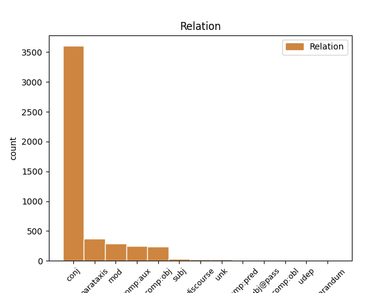
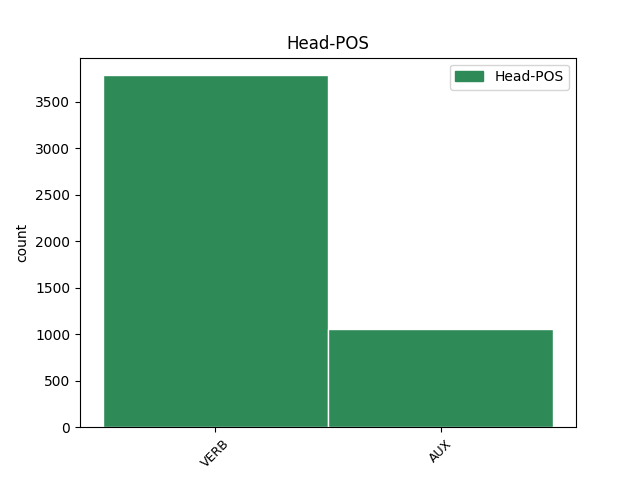
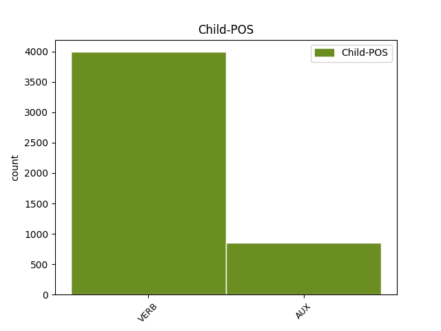

Distribution of features within this leaf



Agreement Rules sorted by frequency.
- When the dependent token is the conjunct(conj) of the head token, and the head token is VERB and the dependent token is VERB.
1 Galtungs _ _ _ _ 0 _ _ _
2 atšķirības _ _ _ _ 0 _ _ _
3 starp _ _ _ _ 0 _ _ _
4 dažādām _ _ _ _ 0 _ _ _
5 vardarbības _ _ _ _ 0 _ _ _
6 formām _ _ _ _ 0 _ _ _
7 raksturo _ _ _ _ 0 _ _ _
8 šādi _ _ _ _ 0 _ _ _
9 : _ _ _ _ 0 _ _ _
10 tiešā _ _ _ _ 0 _ _ _
11 vardarbība _ _ _ _ 0 _ _ _
12 ir _ _ _ _ 0 _ _ _
13 notikums _ _ _ _ 0 _ _ _
14 / _ _ _ _ 0 _ _ _
15 akts _ _ _ _ 0 _ _ _
16 , _ _ _ _ 0 _ _ _
17 strukturāla _ _ _ _ 0 _ _ _
18 vardarbība _ _ _ _ 0 _ _ _
19 ir _ _ _ _ 0 _ _ _
20 process _ _ _ _ 0 _ _ _
21 , _ _ _ _ 0 _ _ _
22 kultūras _ _ _ _ 0 _ _ _
23 vardarbība _ _ _ _ 0 _ _ _
24 nemainās mainīties VERB vmyipi330ay Evident=Fh|Mood=Ind|Person=3|Polarity=Neg|Reflex=Yes|Tense=Pres|VerbForm=Fin|Voice=Act 0 _ _ _
25 tik _ _ _ _ 0 _ _ _
26 ātri _ _ _ _ 0 _ _ _
27 un _ _ _ _ 0 _ _ _
28 ilgstoši _ _ _ _ 0 _ _ _
29 saglabā saglabāt VERB vmnipt230an Evident=Fh|Mood=Ind|Person=3|Polarity=Pos|Tense=Pres|VerbForm=Fin|Voice=Act 24 conj _ LvtbNodeId=a-z99-p16s7w29
30 savu _ _ _ _ 0 _ _ _
31 pamatbūtību _ _ _ _ 0 _ _ _
32 . _ _ _ _ 0 _ _ _
1 Galtungs _ _ _ _ 0 _ _ _
2 atšķirības _ _ _ _ 0 _ _ _
3 starp _ _ _ _ 0 _ _ _
4 dažādām _ _ _ _ 0 _ _ _
5 vardarbības _ _ _ _ 0 _ _ _
6 formām _ _ _ _ 0 _ _ _
7 raksturo _ _ _ _ 0 _ _ _
8 šādi _ _ _ _ 0 _ _ _
9 : _ _ _ _ 0 _ _ _
10 tiešā _ _ _ _ 0 _ _ _
11 vardarbība _ _ _ _ 0 _ _ _
12 ir _ _ _ _ 0 _ _ _
13 notikums _ _ _ _ 0 _ _ _
14 / _ _ _ _ 0 _ _ _
15 akts _ _ _ _ 0 _ _ _
16 , _ _ _ _ 0 _ _ _
17 strukturāla _ _ _ _ 0 _ _ _
18 vardarbība _ _ _ _ 0 _ _ _
19 ir būt AUX vcnipii30an Evident=Fh|Mood=Ind|Person=3|Polarity=Pos|Tense=Pres|VerbForm=Fin|Voice=Act 0 _ _ _
20 process _ _ _ _ 0 _ _ _
21 , _ _ _ _ 0 _ _ _
22 kultūras _ _ _ _ 0 _ _ _
23 vardarbība _ _ _ _ 0 _ _ _
24 nemainās mainīties VERB vmyipi330ay Evident=Fh|Mood=Ind|Person=3|Polarity=Neg|Reflex=Yes|Tense=Pres|VerbForm=Fin|Voice=Act 19 conj _ LvtbNodeId=a-z99-p16s7w24
25 tik _ _ _ _ 0 _ _ _
26 ātri _ _ _ _ 0 _ _ _
27 un _ _ _ _ 0 _ _ _
28 ilgstoši _ _ _ _ 0 _ _ _
29 saglabā _ _ _ _ 0 _ _ _
30 savu _ _ _ _ 0 _ _ _
31 pamatbūtību _ _ _ _ 0 _ _ _
32 . _ _ _ _ 0 _ _ _
1 Galtungs _ _ _ _ 0 _ _ _
2 atšķirības _ _ _ _ 0 _ _ _
3 starp _ _ _ _ 0 _ _ _
4 dažādām _ _ _ _ 0 _ _ _
5 vardarbības _ _ _ _ 0 _ _ _
6 formām _ _ _ _ 0 _ _ _
7 raksturo raksturot VERB vmnipt230an Evident=Fh|Mood=Ind|Person=3|Polarity=Pos|Tense=Pres|VerbForm=Fin|Voice=Act 0 _ _ _
8 šādi _ _ _ _ 0 _ _ _
9 : _ _ _ _ 0 _ _ _
10 tiešā _ _ _ _ 0 _ _ _
11 vardarbība _ _ _ _ 0 _ _ _
12 ir būt AUX vcnipii30an Evident=Fh|Mood=Ind|Person=3|Polarity=Pos|Tense=Pres|VerbForm=Fin|Voice=Act 7 conj _ LvtbNodeId=a-z99-p16s7w12
13 notikums _ _ _ _ 0 _ _ _
14 / _ _ _ _ 0 _ _ _
15 akts _ _ _ _ 0 _ _ _
16 , _ _ _ _ 0 _ _ _
17 strukturāla _ _ _ _ 0 _ _ _
18 vardarbība _ _ _ _ 0 _ _ _
19 ir _ _ _ _ 0 _ _ _
20 process _ _ _ _ 0 _ _ _
21 , _ _ _ _ 0 _ _ _
22 kultūras _ _ _ _ 0 _ _ _
23 vardarbība _ _ _ _ 0 _ _ _
24 nemainās _ _ _ _ 0 _ _ _
25 tik _ _ _ _ 0 _ _ _
26 ātri _ _ _ _ 0 _ _ _
27 un _ _ _ _ 0 _ _ _
28 ilgstoši _ _ _ _ 0 _ _ _
29 saglabā _ _ _ _ 0 _ _ _
30 savu _ _ _ _ 0 _ _ _
31 pamatbūtību _ _ _ _ 0 _ _ _
32 . _ _ _ _ 0 _ _ _
1 Galtungs _ _ _ _ 0 _ _ _
2 atšķirības _ _ _ _ 0 _ _ _
3 starp _ _ _ _ 0 _ _ _
4 dažādām _ _ _ _ 0 _ _ _
5 vardarbības _ _ _ _ 0 _ _ _
6 formām _ _ _ _ 0 _ _ _
7 raksturo _ _ _ _ 0 _ _ _
8 šādi _ _ _ _ 0 _ _ _
9 : _ _ _ _ 0 _ _ _
10 tiešā _ _ _ _ 0 _ _ _
11 vardarbība _ _ _ _ 0 _ _ _
12 ir būt AUX vcnipii30an Evident=Fh|Mood=Ind|Person=3|Polarity=Pos|Tense=Pres|VerbForm=Fin|Voice=Act 0 _ _ _
13 notikums _ _ _ _ 0 _ _ _
14 / _ _ _ _ 0 _ _ _
15 akts _ _ _ _ 0 _ _ _
16 , _ _ _ _ 0 _ _ _
17 strukturāla _ _ _ _ 0 _ _ _
18 vardarbība _ _ _ _ 0 _ _ _
19 ir būt AUX vcnipii30an Evident=Fh|Mood=Ind|Person=3|Polarity=Pos|Tense=Pres|VerbForm=Fin|Voice=Act 12 conj _ LvtbNodeId=a-z99-p16s7w19
20 process _ _ _ _ 0 _ _ _
21 , _ _ _ _ 0 _ _ _
22 kultūras _ _ _ _ 0 _ _ _
23 vardarbība _ _ _ _ 0 _ _ _
24 nemainās _ _ _ _ 0 _ _ _
25 tik _ _ _ _ 0 _ _ _
26 ātri _ _ _ _ 0 _ _ _
27 un _ _ _ _ 0 _ _ _
28 ilgstoši _ _ _ _ 0 _ _ _
29 saglabā _ _ _ _ 0 _ _ _
30 savu _ _ _ _ 0 _ _ _
31 pamatbūtību _ _ _ _ 0 _ _ _
32 . _ _ _ _ 0 _ _ _
1 Kā _ _ _ _ 0 _ _ _
2 liecina liecināt VERB vmnipt330an Evident=Fh|Mood=Ind|Person=3|Polarity=Pos|Tense=Pres|VerbForm=Fin|Voice=Act 23 parataxis _ LvtbNodeId=a-z46-p12s1w2
3 pagājušajā _ _ _ _ 0 _ _ _
4 gadā _ _ _ _ 0 _ _ _
5 Latvijā _ _ _ _ 0 _ _ _
6 veiktais _ _ _ _ 0 _ _ _
7 pētījums _ _ _ _ 0 _ _ _
8 , _ _ _ _ 0 _ _ _
9 tad _ _ _ _ 0 _ _ _
10 vismaz _ _ _ _ 0 _ _ _
11 pēc _ _ _ _ 0 _ _ _
12 augstskolas _ _ _ _ 0 _ _ _
13 beigšanas _ _ _ _ 0 _ _ _
14 vai _ _ _ _ 0 _ _ _
15 jau _ _ _ _ 0 _ _ _
16 studiju _ _ _ _ 0 _ _ _
17 laikā _ _ _ _ 0 _ _ _
18 pedagoģisko _ _ _ _ 0 _ _ _
19 specialitāšu _ _ _ _ 0 _ _ _
20 studentu _ _ _ _ 0 _ _ _
21 izvēlētais _ _ _ _ 0 _ _ _
22 darbs _ _ _ _ 0 _ _ _
23 atbilda atbilst VERB vmnist130an Evident=Fh|Mood=Ind|Person=3|Polarity=Pos|Tense=Past|VerbForm=Fin|Voice=Act 0 _ _ _
24 iegūtai _ _ _ _ 0 _ _ _
25 izglītībai _ _ _ _ 0 _ _ _
26 . _ _ _ _ 0 _ _ _
1 2006. _ _ _ _ 0 _ _ _
2 / _ _ _ _ 0 _ _ _
3 07. _ _ _ _ 0 _ _ _
4 mācību _ _ _ _ 0 _ _ _
5 gadā _ _ _ _ 0 _ _ _
6 skolotāju _ _ _ _ 0 _ _ _
7 ar _ _ _ _ 0 _ _ _
8 augstāko _ _ _ _ 0 _ _ _
9 pedagoģisko _ _ _ _ 0 _ _ _
10 izglītību _ _ _ _ 0 _ _ _
11 īpatsvars _ _ _ _ 0 _ _ _
12 pārsniedza pārsniegt VERB vmnist130an Evident=Fh|Mood=Ind|Person=3|Polarity=Pos|Tense=Past|VerbForm=Fin|Voice=Act 0 _ _ _
13 90 _ _ _ _ 0 _ _ _
14 % _ _ _ _ 0 _ _ _
15 , _ _ _ _ 0 _ _ _
16 kas _ _ _ _ 0 _ _ _
17 liecina liecināt VERB vmnipt330an Evident=Fh|Mood=Ind|Person=3|Polarity=Pos|Tense=Pres|VerbForm=Fin|Voice=Act 12 mod _ LvtbNodeId=a-z46-p4s5w17|SpaceAfter=No
18 , _ _ _ _ 0 _ _ _
19 ka _ _ _ _ 0 _ _ _
20 starp _ _ _ _ 0 _ _ _
21 strādājošajiem _ _ _ _ 0 _ _ _
22 skolotājiem _ _ _ _ 0 _ _ _
23 ir _ _ _ _ 0 _ _ _
24 maz _ _ _ _ 0 _ _ _
25 tādu _ _ _ _ 0 _ _ _
26 , _ _ _ _ 0 _ _ _
27 kam _ _ _ _ 0 _ _ _
28 nepieciešams _ _ _ _ 0 _ _ _
29 studēt _ _ _ _ 0 _ _ _
30 augstskolā _ _ _ _ 0 _ _ _
31 , _ _ _ _ 0 _ _ _
32 lai _ _ _ _ 0 _ _ _
33 izpildītu _ _ _ _ 0 _ _ _
34 likuma _ _ _ _ 0 _ _ _
35 prasību _ _ _ _ 0 _ _ _
36 par _ _ _ _ 0 _ _ _
37 atbilstošu _ _ _ _ 0 _ _ _
38 izglītību _ _ _ _ 0 _ _ _
39 darbam _ _ _ _ 0 _ _ _
40 izglītības _ _ _ _ 0 _ _ _
41 iestādē _ _ _ _ 0 _ _ _
42 ( _ _ _ _ 0 _ _ _
43 LR _ _ _ _ 0 _ _ _
44 vispārizglītojošo _ _ _ _ 0 _ _ _
45 dienas _ _ _ _ 0 _ _ _
46 skolu _ _ _ _ 0 _ _ _
47 pedagogu _ _ _ _ 0 _ _ _
48 sadalījums _ _ _ _ 0 _ _ _
49 pēc _ _ _ _ 0 _ _ _
50 izglītības _ _ _ _ 0 _ _ _
51 ( _ _ _ _ 0 _ _ _
52 procentos _ _ _ _ 0 _ _ _
53 ) _ _ _ _ 0 _ _ _
54 2006. _ _ _ _ 0 _ _ _
55 / _ _ _ _ 0 _ _ _
56 2007. _ _ _ _ 0 _ _ _
57 m.g. _ _ _ _ 0 _ _ _
58 ) _ _ _ _ 0 _ _ _
59 . _ _ _ _ 0 _ _ _
1 Šobrīd _ _ _ _ 0 _ _ _
2 nav _ _ _ _ 0 _ _ _
3 izdevies _ _ _ _ 0 _ _ _
4 atrast _ _ _ _ 0 _ _ _
5 pētījumus _ _ _ _ 0 _ _ _
6 , _ _ _ _ 0 _ _ _
7 kas _ _ _ _ 0 _ _ _
8 parādītu parādīt VERB vmnc0t300an Mood=Cnd|Polarity=Pos|VerbForm=Fin|Voice=Act 0 _ _ _
9 , _ _ _ _ 0 _ _ _
10 kā _ _ _ _ 0 _ _ _
11 Latvijas _ _ _ _ 0 _ _ _
12 vispārizglītojošo _ _ _ _ 0 _ _ _
13 skolu _ _ _ _ 0 _ _ _
14 tīklu _ _ _ _ 0 _ _ _
15 varētu varēt VERB vonc0i300an Mood=Cnd|Polarity=Pos|VerbForm=Fin|Voice=Act 8 comp:obj _ LvtbNodeId=a-z46-p13s5w15
16 ietekmēt _ _ _ _ 0 _ _ _
17 gaidāmā _ _ _ _ 0 _ _ _
18 pašvaldību _ _ _ _ 0 _ _ _
19 reforma _ _ _ _ 0 _ _ _
20 , _ _ _ _ 0 _ _ _
21 tomēr _ _ _ _ 0 _ _ _
22 nenoliedzami _ _ _ _ 0 _ _ _
23 tā _ _ _ _ 0 _ _ _
24 arī _ _ _ _ 0 _ _ _
25 atstās _ _ _ _ 0 _ _ _
26 savu _ _ _ _ 0 _ _ _
27 ietekmi _ _ _ _ 0 _ _ _
28 . _ _ _ _ 0 _ _ _
1 Tiešā _ _ _ _ 0 _ _ _
2 vardarbība _ _ _ _ 0 _ _ _
3 labi _ _ _ _ 0 _ _ _
4 atbilst atbilst VERB vmnipi130an Evident=Fh|Mood=Ind|Person=3|Polarity=Pos|Tense=Pres|VerbForm=Fin|Voice=Act 0 _ _ _
5 vispārīgai _ _ _ _ 0 _ _ _
6 vardarbības _ _ _ _ 0 _ _ _
7 definīcijai _ _ _ _ 0 _ _ _
8 ( _ _ _ _ 0 _ _ _
9 labs _ _ _ _ 0 _ _ _
10 piemērs _ _ _ _ 0 _ _ _
11 tam _ _ _ _ 0 _ _ _
12 ir būt AUX vcnipii30an Evident=Fh|Mood=Ind|Person=3|Polarity=Pos|Tense=Pres|VerbForm=Fin|Voice=Act 4 parataxis _ LvtbNodeId=a-z99-p16s2w12
13 Fretheima _ _ _ _ 0 _ _ _
14 definīcija _ _ _ _ 0 _ _ _
15 ) _ _ _ _ 0 _ _ _
16 . _ _ _ _ 0 _ _ _
1 Šāda _ _ _ _ 0 _ _ _
2 pieeja _ _ _ _ 0 _ _ _
3 nesakņojas _ _ _ _ 0 _ _ _
4 tikai _ _ _ _ 0 _ _ _
5 morālas _ _ _ _ 0 _ _ _
6 dabas _ _ _ _ 0 _ _ _
7 apsvērumos _ _ _ _ 0 _ _ _
8 , _ _ _ _ 0 _ _ _
9 bet _ _ _ _ 0 _ _ _
10 ietver _ _ _ _ 0 _ _ _
11 arī _ _ _ _ 0 _ _ _
12 efektivitātes _ _ _ _ 0 _ _ _
13 jautājumus _ _ _ _ 0 _ _ _
14 , _ _ _ _ 0 _ _ _
15 jo _ _ _ _ 0 _ _ _
16 tieši _ _ _ _ 0 _ _ _
17 šīs _ _ _ _ 0 _ _ _
18 sabiedrības _ _ _ _ 0 _ _ _
19 grupas _ _ _ _ 0 _ _ _
20 zinās zināt VERB vmnift330an Evident=Fh|Mood=Ind|Person=3|Polarity=Pos|Tense=Fut|VerbForm=Fin|Voice=Act 0 _ _ _
21 vislabāk _ _ _ _ 0 _ _ _
22 , _ _ _ _ 0 _ _ _
23 kas _ _ _ _ 0 _ _ _
24 tām _ _ _ _ 0 _ _ _
25 ir būt AUX vcnipii30an Evident=Fh|Mood=Ind|Person=3|Polarity=Pos|Tense=Pres|VerbForm=Fin|Voice=Act 20 comp:obj _ LvtbNodeId=a-z107-p138s2w25
26 nepieciešams _ _ _ _ 0 _ _ _
27 nedrošības _ _ _ _ 0 _ _ _
28 mazināšanai _ _ _ _ 0 _ _ _
29 . _ _ _ _ 0 _ _ _
1 Daudzi _ _ _ _ 0 _ _ _
2 apgalvojumi _ _ _ _ 0 _ _ _
3 ir būt AUX vcnipii30an Evident=Fh|Mood=Ind|Person=3|Polarity=Pos|Tense=Pres|VerbForm=Fin|Voice=Act 0 _ _ _
4 literatūrā _ _ _ _ 0 _ _ _
5 apgāzti _ _ _ _ 0 _ _ _
6 , _ _ _ _ 0 _ _ _
7 kas _ _ _ _ 0 _ _ _
8 liecina liecināt VERB vmnipt330an Evident=Fh|Mood=Ind|Person=3|Polarity=Pos|Tense=Pres|VerbForm=Fin|Voice=Act 3 mod _ LvtbNodeId=a-z88-p34s5w8|SpaceAfter=No
9 , _ _ _ _ 0 _ _ _
10 ka _ _ _ _ 0 _ _ _
11 O. _ _ _ _ 0 _ _ _
12 Dankers _ _ _ _ 0 _ _ _
13 mēģinājis _ _ _ _ 0 _ _ _
14 slēpt _ _ _ _ 0 _ _ _
15 patiesību _ _ _ _ 0 _ _ _
16 no _ _ _ _ 0 _ _ _
17 pasaules _ _ _ _ 0 _ _ _
18 , _ _ _ _ 0 _ _ _
19 tāpēc _ _ _ _ 0 _ _ _
20 nekādu _ _ _ _ 0 _ _ _
21 “ _ _ _ _ 0 _ _ _
22 tiesu _ _ _ _ 0 _ _ _
23 ” _ _ _ _ 0 _ _ _
24 no _ _ _ _ 0 _ _ _
25 viņa _ _ _ _ 0 _ _ _
26 darba _ _ _ _ 0 _ _ _
27 vēsture _ _ _ _ 0 _ _ _
28 nevar _ _ _ _ 0 _ _ _
29 spriest _ _ _ _ 0 _ _ _
30 . _ _ _ _ 0 _ _ _
1 Ļeoņidiks _ _ _ _ 0 _ _ _
2 aiziet aiziet VERB vmnipii30an Evident=Fh|Mood=Ind|Person=3|Polarity=Pos|Tense=Pres|VerbForm=Fin|Voice=Act 0 _ _ _
3 no _ _ _ _ 0 _ _ _
4 viņas _ _ _ _ 0 _ _ _
5 dzīves _ _ _ _ 0 _ _ _
6 , _ _ _ _ 0 _ _ _
7 lai _ _ _ _ 0 _ _ _
8 izdarītu _ _ _ _ 0 _ _ _
9 pašnāvību _ _ _ _ 0 _ _ _
10 , _ _ _ _ 0 _ _ _
11 kas _ _ _ _ 0 _ _ _
12 ir būt AUX vcnipii30an Evident=Fh|Mood=Ind|Person=3|Polarity=Pos|Tense=Pres|VerbForm=Fin|Voice=Act 2 mod _ LvtbNodeId=a-z83-p189s7w12
13 novirze _ _ _ _ 0 _ _ _
14 no _ _ _ _ 0 _ _ _
15 melodrāmas _ _ _ _ 0 _ _ _
16 žanriskajām _ _ _ _ 0 _ _ _
17 prasībām _ _ _ _ 0 _ _ _
18 , _ _ _ _ 0 _ _ _
19 jo _ _ _ _ 0 _ _ _
20 Ļeoņidiks _ _ _ _ 0 _ _ _
21 lugas _ _ _ _ 0 _ _ _
22 struktūrā _ _ _ _ 0 _ _ _
23 nav _ _ _ _ 0 _ _ _
24 ļaundaris _ _ _ _ 0 _ _ _
25 , _ _ _ _ 0 _ _ _
26 drīzāk _ _ _ _ 0 _ _ _
27 – _ _ _ _ 0 _ _ _
28 nejaušības _ _ _ _ 0 _ _ _
29 ( _ _ _ _ 0 _ _ _
30 liktenis _ _ _ _ 0 _ _ _
31 ) _ _ _ _ 0 _ _ _
32 radīts _ _ _ _ 0 _ _ _
33 šķērslis _ _ _ _ 0 _ _ _
34 galveno _ _ _ _ 0 _ _ _
35 varoņu _ _ _ _ 0 _ _ _
36 laimei _ _ _ _ 0 _ _ _
37 . _ _ _ _ 0 _ _ _
1 Iespējams _ _ _ _ 0 _ _ _
2 , _ _ _ _ 0 _ _ _
3 ka _ _ _ _ 0 _ _ _
4 pazemība _ _ _ _ 0 _ _ _
5 senajā _ _ _ _ 0 _ _ _
6 Izraēlā _ _ _ _ 0 _ _ _
7 tika _ _ _ _ 0 _ _ _
8 pārņemta _ _ _ _ 0 _ _ _
9 kā _ _ _ _ 0 _ _ _
10 ierēdņu _ _ _ _ 0 _ _ _
11 tikums _ _ _ _ 0 _ _ _
12 no _ _ _ _ 0 _ _ _
13 apkārtējām _ _ _ _ 0 _ _ _
14 kultūrām _ _ _ _ 0 _ _ _
15 , _ _ _ _ 0 _ _ _
16 kas _ _ _ _ 0 _ _ _
17 tika tikt AUX vtnisi130an Evident=Fh|Mood=Ind|Person=3|Polarity=Pos|Tense=Past|VerbForm=Fin|Voice=Act 0 _ _ _
18 piemērota _ _ _ _ 0 _ _ _
19 Jahves _ _ _ _ 0 _ _ _
20 reliģijai _ _ _ _ 0 _ _ _
21 ( _ _ _ _ 0 _ _ _
22 Jahve _ _ _ _ 0 _ _ _
23 ienīst ienīst VERB vmnipt130an Evident=Fh|Mood=Ind|Person=3|Polarity=Pos|Tense=Pres|VerbForm=Fin|Voice=Act 17 parataxis _ LvtbNodeId=a-z99-p160s2w23
24 visus _ _ _ _ 0 _ _ _
25 augstprātīgos _ _ _ _ 0 _ _ _
26 un _ _ _ _ 0 _ _ _
27 lepnos _ _ _ _ 0 _ _ _
28 ) _ _ _ _ 0 _ _ _
29 . _ _ _ _ 0 _ _ _
1 Es _ _ _ _ 0 _ _ _
2 reiz _ _ _ _ 0 _ _ _
3 Anglijā _ _ _ _ 0 _ _ _
4 biju būt VERB vmnisii1san Evident=Fh|Mood=Ind|Number=Sing|Person=1|Polarity=Pos|Tense=Past|VerbForm=Fin|Voice=Act 0 _ _ _
5 Karaliskā _ _ _ _ 0 _ _ _
6 baleta _ _ _ _ 0 _ _ _
7 valdē _ _ _ _ 0 _ _ _
8 , _ _ _ _ 0 _ _ _
9 kā _ _ _ _ 0 _ _ _
10 jau _ _ _ _ 0 _ _ _
11 varat varēt VERB vonipi32pan Evident=Fh|Mood=Ind|Number=Plur|Person=2|Polarity=Pos|Tense=Pres|VerbForm=Fin|Voice=Act 4 discourse _ LvtbNodeId=a-s25-p15s10w11
12 redzēt _ _ _ _ 0 _ _ _
13 . _ _ _ _ 0 _ _ _
1 Iespējams _ _ _ _ 0 _ _ _
2 , _ _ _ _ 0 _ _ _
3 ka _ _ _ _ 0 _ _ _
4 pazemība _ _ _ _ 0 _ _ _
5 senajā _ _ _ _ 0 _ _ _
6 Izraēlā _ _ _ _ 0 _ _ _
7 tika tikt AUX vtnisi130an Evident=Fh|Mood=Ind|Person=3|Polarity=Pos|Tense=Past|VerbForm=Fin|Voice=Act 0 _ _ _
8 pārņemta _ _ _ _ 0 _ _ _
9 kā _ _ _ _ 0 _ _ _
10 ierēdņu _ _ _ _ 0 _ _ _
11 tikums _ _ _ _ 0 _ _ _
12 no _ _ _ _ 0 _ _ _
13 apkārtējām _ _ _ _ 0 _ _ _
14 kultūrām _ _ _ _ 0 _ _ _
15 , _ _ _ _ 0 _ _ _
16 kas _ _ _ _ 0 _ _ _
17 tika tikt AUX vtnisi130an Evident=Fh|Mood=Ind|Person=3|Polarity=Pos|Tense=Past|VerbForm=Fin|Voice=Act 7 mod _ LvtbNodeId=a-z99-p160s2w17
18 piemērota _ _ _ _ 0 _ _ _
19 Jahves _ _ _ _ 0 _ _ _
20 reliģijai _ _ _ _ 0 _ _ _
21 ( _ _ _ _ 0 _ _ _
22 Jahve _ _ _ _ 0 _ _ _
23 ienīst _ _ _ _ 0 _ _ _
24 visus _ _ _ _ 0 _ _ _
25 augstprātīgos _ _ _ _ 0 _ _ _
26 un _ _ _ _ 0 _ _ _
27 lepnos _ _ _ _ 0 _ _ _
28 ) _ _ _ _ 0 _ _ _
29 . _ _ _ _ 0 _ _ _
1 Šajā _ _ _ _ 0 _ _ _
2 kontekstā _ _ _ _ 0 _ _ _
3 ir būt AUX vcnipii30an Evident=Fh|Mood=Ind|Person=3|Polarity=Pos|Tense=Pres|VerbForm=Fin|Voice=Act 0 _ _ _
4 konstatējams _ _ _ _ 0 _ _ _
5 , _ _ _ _ 0 _ _ _
6 kā _ _ _ _ 0 _ _ _
7 birokrātiska _ _ _ _ 0 _ _ _
8 institūcija _ _ _ _ 0 _ _ _
9 nodrošina nodrošināt VERB vmnipt330an Evident=Fh|Mood=Ind|Person=3|Polarity=Pos|Tense=Pres|VerbForm=Fin|Voice=Act 3 subj _ LvtbNodeId=a-z107-p172s3w9
10 gan _ _ _ _ 0 _ _ _
11 savu _ _ _ _ 0 _ _ _
12 resursu _ _ _ _ 0 _ _ _
13 pietiekamību _ _ _ _ 0 _ _ _
14 , _ _ _ _ 0 _ _ _
15 gan _ _ _ _ 0 _ _ _
16 darbības _ _ _ _ 0 _ _ _
17 efektivitāti _ _ _ _ 0 _ _ _
18 ar _ _ _ _ 0 _ _ _
19 konkrētas _ _ _ _ 0 _ _ _
20 rīcībpolitikas _ _ _ _ 0 _ _ _
21 noteikšanu _ _ _ _ 0 _ _ _
22 par _ _ _ _ 0 _ _ _
23 prioritāru _ _ _ _ 0 _ _ _
24 politikas _ _ _ _ 0 _ _ _
25 plānošanas _ _ _ _ 0 _ _ _
26 dokumentos _ _ _ _ 0 _ _ _
27 , _ _ _ _ 0 _ _ _
28 pēc _ _ _ _ 0 _ _ _
29 kuriem _ _ _ _ 0 _ _ _
30 vadās _ _ _ _ 0 _ _ _
31 lēmumu _ _ _ _ 0 _ _ _
32 pieņēmēji _ _ _ _ 0 _ _ _
33 . _ _ _ _ 0 _ _ _
1 Izrādās izrādīties VERB vmyipi330an Evident=Fh|Mood=Ind|Person=3|Polarity=Pos|Reflex=Yes|Tense=Pres|VerbForm=Fin|Voice=Act 0 _ _ _
2 , _ _ _ _ 0 _ _ _
3 no _ _ _ _ 0 _ _ _
4 galvas _ _ _ _ 0 _ _ _
5 vēl _ _ _ _ 0 _ _ _
6 tecēja tecēt VERB vmnisi330an Evident=Fh|Mood=Ind|Person=3|Polarity=Pos|Tense=Past|VerbForm=Fin|Voice=Act 1 subj _ LvtbNodeId=a-p5-p18s5w6
7 asinis _ _ _ _ 0 _ _ _
8 . _ _ _ _ 0 _ _ _
1 O. _ _ _ _ 0 _ _ _
2 Dankers _ _ _ _ 0 _ _ _
3 ir _ _ _ _ 0 _ _ _
4 uzrakstījis _ _ _ _ 0 _ _ _
5 grāmatu _ _ _ _ 0 _ _ _
6 , _ _ _ _ 0 _ _ _
7 kas _ _ _ _ 0 _ _ _
8 saucas saukties VERB vmyipi130an Evident=Fh|Mood=Ind|Person=3|Polarity=Pos|Reflex=Yes|Tense=Pres|VerbForm=Fin|Voice=Act 0 _ _ _
9 Lai _ _ _ _ 0 _ _ _
10 vēsture _ _ _ _ 0 _ _ _
11 spriež spriest VERB vmnipt130an Evident=Fh|Mood=Ind|Person=3|Polarity=Pos|Tense=Pres|VerbForm=Fin|Voice=Act 8 unk _ LvtbNodeId=a-z88-p34s2w12
12 tiesu _ _ _ _ 0 _ _ _
13 ( _ _ _ _ 0 _ _ _
14 Toronto _ _ _ _ 0 _ _ _
15 , _ _ _ _ 0 _ _ _
16 1965 _ _ _ _ 0 _ _ _
17 ) _ _ _ _ 0 _ _ _
18 . _ _ _ _ 0 _ _ _
1 „ _ _ _ _ 0 _ _ _
2 Sabiedrība _ _ _ _ 0 _ _ _
3 , _ _ _ _ 0 _ _ _
4 kas _ _ _ _ 0 _ _ _
5 nav _ _ _ _ 0 _ _ _
6 attīrījusies _ _ _ _ 0 _ _ _
7 , _ _ _ _ 0 _ _ _
8 nav būt AUX vcnipii30ay Evident=Fh|Mood=Ind|Person=3|Polarity=Neg|Tense=Pres|VerbForm=Fin|Voice=Act 33 parataxis _ LvtbNodeId=a-s39-p7s4w8
9 spējīga _ _ _ _ 0 _ _ _
10 būvēt _ _ _ _ 0 _ _ _
11 no _ _ _ _ 0 _ _ _
12 totalitārisma _ _ _ _ 0 _ _ _
13 mantojuma _ _ _ _ 0 _ _ _
14 patiesi _ _ _ _ 0 _ _ _
15 brīvu _ _ _ _ 0 _ _ _
16 , _ _ _ _ 0 _ _ _
17 plaukstošu _ _ _ _ 0 _ _ _
18 valsti _ _ _ _ 0 _ _ _
19 , _ _ _ _ 0 _ _ _
20 jo _ _ _ _ 0 _ _ _
21 to _ _ _ _ 0 _ _ _
22 nomāc _ _ _ _ 0 _ _ _
23 pagātnes _ _ _ _ 0 _ _ _
24 rēgi _ _ _ _ 0 _ _ _
25 un _ _ _ _ 0 _ _ _
26 neizgaismotās _ _ _ _ 0 _ _ _
27 padomju _ _ _ _ 0 _ _ _
28 sistēmas _ _ _ _ 0 _ _ _
29 ēnas _ _ _ _ 0 _ _ _
30 , _ _ _ _ 0 _ _ _
31 ” _ _ _ _ 0 _ _ _
32 tā _ _ _ _ 0 _ _ _
33 ir būt AUX vcnipii30an Evident=Fh|Mood=Ind|Person=3|Polarity=Pos|Tense=Pres|VerbForm=Fin|Voice=Act 0 _ _ _
34 izteikusies _ _ _ _ 0 _ _ _
35 dzejniece _ _ _ _ 0 _ _ _
36 Liāna _ _ _ _ 0 _ _ _
37 Langa _ _ _ _ 0 _ _ _
38 . _ _ _ _ 0 _ _ _
1 Kā _ _ _ _ 0 _ _ _
2 par _ _ _ _ 0 _ _ _
3 cilvēku _ _ _ _ 0 _ _ _
4 un _ _ _ _ 0 _ _ _
5 politiķi _ _ _ _ 0 _ _ _
6 par _ _ _ _ 0 _ _ _
7 Raimondu _ _ _ _ 0 _ _ _
8 Vējoni _ _ _ _ 0 _ _ _
9 var varēt VERB vonipi330an Evident=Fh|Mood=Ind|Person=3|Polarity=Pos|Tense=Pres|VerbForm=Fin|Voice=Act 0 _ _ _
10 bilst bilst VERB vmnipt130an Evident=Fh|Mood=Ind|Person=3|Polarity=Pos|Tense=Pres|VerbForm=Fin|Voice=Act 9 comp:pred _ LvtbNodeId=a-s86-p3s1w10|SpaceAfter=No
11 , _ _ _ _ 0 _ _ _
12 ka _ _ _ _ 0 _ _ _
13 viņš _ _ _ _ 0 _ _ _
14 ir _ _ _ _ 0 _ _ _
15 politiski _ _ _ _ 0 _ _ _
16 nobriedis _ _ _ _ 0 _ _ _
17 . _ _ _ _ 0 _ _ _
1 Apzīmējums _ _ _ _ 0 _ _ _
2 “ _ _ _ _ 0 _ _ _
3 esam būt AUX vcnipii1pan Evident=Fh|Mood=Ind|Number=Plur|Person=1|Polarity=Pos|Tense=Pres|VerbForm=Fin|Voice=Act 7 subj _ LvtbNodeId=a-z21-p47s12w3
4 pacēluši _ _ _ _ 0 _ _ _
5 jautājumu _ _ _ _ 0 _ _ _
6 ” _ _ _ _ 0 _ _ _
7 neļauj ļaut VERB vmnipt130ay Evident=Fh|Mood=Ind|Person=3|Polarity=Neg|Tense=Pres|VerbForm=Fin|Voice=Act 0 _ _ _
8 spriest _ _ _ _ 0 _ _ _
9 , _ _ _ _ 0 _ _ _
10 vai _ _ _ _ 0 _ _ _
11 šāds _ _ _ _ 0 _ _ _
12 priekšlikums _ _ _ _ 0 _ _ _
13 jau _ _ _ _ 0 _ _ _
14 iesniegts _ _ _ _ 0 _ _ _
15 PSRS _ _ _ _ 0 _ _ _
16 , _ _ _ _ 0 _ _ _
17 vai _ _ _ _ 0 _ _ _
18 tikai _ _ _ _ 0 _ _ _
19 tiek _ _ _ _ 0 _ _ _
20 apspriests _ _ _ _ 0 _ _ _
21 Latvijā _ _ _ _ 0 _ _ _
22 . _ _ _ _ 0 _ _ _
1 Šajā _ _ _ _ 0 _ _ _
2 gadījumā _ _ _ _ 0 _ _ _
3 par _ _ _ _ 0 _ _ _
4 applūstošajām _ _ _ _ 0 _ _ _
5 teritorijām _ _ _ _ 0 _ _ _
6 nav būt AUX vcnipii30ay Evident=Fh|Mood=Ind|Person=3|Polarity=Neg|Tense=Pres|VerbForm=Fin|Voice=Act 0 _ _ _
7 skaidrs _ _ _ _ 0 _ _ _
8 , _ _ _ _ 0 _ _ _
9 kura _ _ _ _ 0 _ _ _
10 ir būt AUX vcnipii30an Evident=Fh|Mood=Ind|Person=3|Polarity=Pos|Tense=Pres|VerbForm=Fin|Voice=Act 6 subj _ LvtbNodeId=a-p267-p2s3w10
11 tā _ _ _ _ 0 _ _ _
12 vērtība _ _ _ _ 0 _ _ _
13 , _ _ _ _ 0 _ _ _
14 kas _ _ _ _ 0 _ _ _
15 ir _ _ _ _ 0 _ _ _
16 jāizsargā _ _ _ _ 0 _ _ _
17 . _ _ _ _ 0 _ _ _
1 Ja _ _ _ _ 0 _ _ _
2 par _ _ _ _ 0 _ _ _
3 to _ _ _ _ 0 _ _ _
4 ģimenē _ _ _ _ 0 _ _ _
5 tiek tikt AUX vtnipi130an Evident=Fh|Mood=Ind|Person=3|Polarity=Pos|Tense=Pres|VerbForm=Fin|Voice=Act 0 _ _ _
6 runāts _ _ _ _ 0 _ _ _
7 , _ _ _ _ 0 _ _ _
8 izskaidrots _ _ _ _ 0 _ _ _
9 , _ _ _ _ 0 _ _ _
10 ko _ _ _ _ 0 _ _ _
11 ar _ _ _ _ 0 _ _ _
12 cilvēku _ _ _ _ 0 _ _ _
13 dara darīt VERB vmnipt330an Evident=Fh|Mood=Ind|Person=3|Polarity=Pos|Tense=Pres|VerbForm=Fin|Voice=Act 5 subj@pass _ LvtbNodeId=a-p680-p14s4w13
14 alkohols _ _ _ _ 0 _ _ _
15 , _ _ _ _ 0 _ _ _
16 narkotikas _ _ _ _ 0 _ _ _
17 , _ _ _ _ 0 _ _ _
18 kādas _ _ _ _ 0 _ _ _
19 sekas _ _ _ _ 0 _ _ _
20 var _ _ _ _ 0 _ _ _
21 būt _ _ _ _ 0 _ _ _
22 , _ _ _ _ 0 _ _ _
23 ja _ _ _ _ 0 _ _ _
24 saruna _ _ _ _ 0 _ _ _
25 ir _ _ _ _ 0 _ _ _
26 nevis _ _ _ _ 0 _ _ _
27 pamācoša _ _ _ _ 0 _ _ _
28 vai _ _ _ _ 0 _ _ _
29 norādoša _ _ _ _ 0 _ _ _
30 , _ _ _ _ 0 _ _ _
31 bet _ _ _ _ 0 _ _ _
32 gan _ _ _ _ 0 _ _ _
33 sadraudzībā _ _ _ _ 0 _ _ _
34 teikta _ _ _ _ 0 _ _ _
35 , _ _ _ _ 0 _ _ _
36 tad _ _ _ _ 0 _ _ _
37 jaunietis _ _ _ _ 0 _ _ _
38 arī _ _ _ _ 0 _ _ _
39 var _ _ _ _ 0 _ _ _
40 izmēģināt _ _ _ _ 0 _ _ _
41 un _ _ _ _ 0 _ _ _
42 pēc _ _ _ _ 0 _ _ _
43 tam _ _ _ _ 0 _ _ _
44 atzīties _ _ _ _ 0 _ _ _
45 vecākiem _ _ _ _ 0 _ _ _
46 , _ _ _ _ 0 _ _ _
47 ka _ _ _ _ 0 _ _ _
48 tas _ _ _ _ 0 _ _ _
49 viņam _ _ _ _ 0 _ _ _
50 nav _ _ _ _ 0 _ _ _
51 bijis _ _ _ _ 0 _ _ _
52 vajadzīgs _ _ _ _ 0 _ _ _
53 . _ _ _ _ 0 _ _ _
1 Tāpat _ _ _ _ 0 _ _ _
2 nav būt AUX vcnipii30ay Evident=Fh|Mood=Ind|Person=3|Polarity=Neg|Tense=Pres|VerbForm=Fin|Voice=Act 0 _ _ _
3 noteikts _ _ _ _ 0 _ _ _
4 , _ _ _ _ 0 _ _ _
5 kas _ _ _ _ 0 _ _ _
6 tad _ _ _ _ 0 _ _ _
7 ir būt AUX vcnipii30an Evident=Fh|Mood=Ind|Person=3|Polarity=Pos|Tense=Pres|VerbForm=Fin|Voice=Act 2 subj@pass _ LvtbNodeId=a-p15639-p3s1w7
8 enerģētiskais _ _ _ _ 0 _ _ _
9 dzēriens _ _ _ _ 0 _ _ _
10 , _ _ _ _ 0 _ _ _
11 kā _ _ _ _ 0 _ _ _
12 atšķirt _ _ _ _ 0 _ _ _
13 aizliegtos _ _ _ _ 0 _ _ _
14 dzērienus _ _ _ _ 0 _ _ _
15 no _ _ _ _ 0 _ _ _
16 dzērieniem _ _ _ _ 0 _ _ _
17 , _ _ _ _ 0 _ _ _
18 kam _ _ _ _ 0 _ _ _
19 ir _ _ _ _ 0 _ _ _
20 zemāka _ _ _ _ 0 _ _ _
21 aktīvo _ _ _ _ 0 _ _ _
22 vielu _ _ _ _ 0 _ _ _
23 koncentrācija _ _ _ _ 0 _ _ _
24 un _ _ _ _ 0 _ _ _
25 kas _ _ _ _ 0 _ _ _
26 nav _ _ _ _ 0 _ _ _
27 jānovieto _ _ _ _ 0 _ _ _
28 un _ _ _ _ 0 _ _ _
29 jāmarķē _ _ _ _ 0 _ _ _
30 atsevišķi _ _ _ _ 0 _ _ _
31 . _ _ _ _ 0 _ _ _
1 Un _ _ _ _ 0 _ _ _
2 cik _ _ _ _ 0 _ _ _
3 labi _ _ _ _ 0 _ _ _
4 dzied _ _ _ _ 0 _ _ _
5 pats _ _ _ _ 0 _ _ _
6 Ventspils _ _ _ _ 0 _ _ _
7 mērs _ _ _ _ 0 _ _ _
8 , _ _ _ _ 0 _ _ _
9 kas _ _ _ _ 0 _ _ _
10 , _ _ _ _ 0 _ _ _
11 kā _ _ _ _ 0 _ _ _
12 izrādās izrādīties VERB vmyipi330an Evident=Fh|Mood=Ind|Person=3|Polarity=Pos|Reflex=Yes|Tense=Pres|VerbForm=Fin|Voice=Act 14 discourse _ LvtbNodeId=a-p3365-p2s5w12|SpaceAfter=No
13 , _ _ _ _ 0 _ _ _
14 ir būt AUX vcnipii30an Evident=Fh|Mood=Ind|Person=3|Polarity=Pos|Tense=Pres|VerbForm=Fin|Voice=Act 0 _ _ _
15 izbijis _ _ _ _ 0 _ _ _
16 moderno _ _ _ _ 0 _ _ _
17 deju _ _ _ _ 0 _ _ _
18 čempions _ _ _ _ 0 _ _ _
19 ? _ _ _ _ 0 _ _ _
1 Zīmītē _ _ _ _ 0 _ _ _
2 stāvēja stāvēt VERB vtnist330an Evident=Fh|Mood=Ind|Person=3|Polarity=Pos|Tense=Past|VerbForm=Fin|Voice=Act 0 _ _ _
3 rakstīts _ _ _ _ 0 _ _ _
4 : _ _ _ _ 0 _ _ _
5 Kas _ _ _ _ 0 _ _ _
6 Tu _ _ _ _ 0 _ _ _
7 esi būt AUX vcnipii2san Evident=Fh|Mood=Ind|Number=Sing|Person=2|Polarity=Pos|Tense=Pres|VerbForm=Fin|Voice=Act 2 subj@pass _ LvtbNodeId=a-d199-p13s1w7|SpaceAfter=No
8 ? _ _ _ _ 0 _ _ _
1 Latvijas _ _ _ _ 0 _ _ _
2 pludmales _ _ _ _ 0 _ _ _
3 volejbolists _ _ _ _ 0 _ _ _
4 Aleksandrs _ _ _ _ 0 _ _ _
5 Samoilovs _ _ _ _ 0 _ _ _
6 apzinās apzināties VERB vmyipt330an Evident=Fh|Mood=Ind|Person=3|Polarity=Pos|Reflex=Yes|Tense=Pres|VerbForm=Fin|Voice=Act 34 comp:obl _ LvtbNodeId=a-p14757-p1s2w6|SpaceAfter=No
7 , _ _ _ _ 0 _ _ _
8 ka _ _ _ _ 0 _ _ _
9 no _ _ _ _ 0 _ _ _
10 viņa _ _ _ _ 0 _ _ _
11 un _ _ _ _ 0 _ _ _
12 Jāņa _ _ _ _ 0 _ _ _
13 Šmēdiņa _ _ _ _ 0 _ _ _
14 pašmāju _ _ _ _ 0 _ _ _
15 līdzjutēji _ _ _ _ 0 _ _ _
16 gaida _ _ _ _ 0 _ _ _
17 tikai _ _ _ _ 0 _ _ _
18 uzvaras _ _ _ _ 0 _ _ _
19 , _ _ _ _ 0 _ _ _
20 jo _ _ _ _ 0 _ _ _
21 pie _ _ _ _ 0 _ _ _
22 tām _ _ _ _ 0 _ _ _
23 sportisti _ _ _ _ 0 _ _ _
24 sabiedrību _ _ _ _ 0 _ _ _
25 ir _ _ _ _ 0 _ _ _
26 pieradinājuši _ _ _ _ 0 _ _ _
27 , _ _ _ _ 0 _ _ _
28 pēc _ _ _ _ 0 _ _ _
29 Eiropas _ _ _ _ 0 _ _ _
30 čempionāta _ _ _ _ 0 _ _ _
31 sudraba _ _ _ _ 0 _ _ _
32 medaļu _ _ _ _ 0 _ _ _
33 izcīnīšanas _ _ _ _ 0 _ _ _
34 izteicās izteikties VERB vmyisi130an Evident=Fh|Mood=Ind|Person=3|Polarity=Pos|Reflex=Yes|Tense=Past|VerbForm=Fin|Voice=Act 0 _ _ _
35 Samoilovs _ _ _ _ 0 _ _ _
36 . _ _ _ _ 0 _ _ _
1 11. _ _ _ _ 0 _ _ _
2 februārī _ _ _ _ 0 _ _ _
3 LTV1 _ _ _ _ 0 _ _ _
4 raidījumā _ _ _ _ 0 _ _ _
5 " _ _ _ _ 0 _ _ _
6 Viss _ _ _ _ 0 _ _ _
7 notiek notikt VERB vmnipi130an Evident=Fh|Mood=Ind|Person=3|Polarity=Pos|Tense=Pres|VerbForm=Fin|Voice=Act 14 udep _ LvtbNodeId=a-p3746-p2s1w7|SpaceAfter=No
8 " _ _ _ _ 0 _ _ _
9 rubrikā _ _ _ _ 0 _ _ _
10 " _ _ _ _ 0 _ _ _
11 Ideju _ _ _ _ 0 _ _ _
12 mežs _ _ _ _ 0 _ _ _
13 " _ _ _ _ 0 _ _ _
14 varēs varēt VERB vonifi330an Evident=Fh|Mood=Ind|Person=3|Polarity=Pos|Tense=Fut|VerbForm=Fin|Voice=Act 0 _ _ _
15 noskatīties _ _ _ _ 0 _ _ _
16 sižetu _ _ _ _ 0 _ _ _
17 par _ _ _ _ 0 _ _ _
18 SIA _ _ _ _ 0 _ _ _
19 " _ _ _ _ 0 _ _ _
20 Zemgales _ _ _ _ 0 _ _ _
21 tehnoloģisko _ _ _ _ 0 _ _ _
22 centru _ _ _ _ 0 _ _ _
23 " _ _ _ _ 0 _ _ _
24 ( _ _ _ _ 0 _ _ _
25 ZTC _ _ _ _ 0 _ _ _
26 ) _ _ _ _ 0 _ _ _
27 , _ _ _ _ 0 _ _ _
28 informē _ _ _ _ 0 _ _ _
29 " _ _ _ _ 0 _ _ _
30 Dienas _ _ _ _ 0 _ _ _
31 Bizness _ _ _ _ 0 _ _ _
32 " _ _ _ _ 0 _ _ _
33 . _ _ _ _ 0 _ _ _
1 Tā _ _ _ _ 0 _ _ _
2 ir būt AUX vcnipii30an Evident=Fh|Mood=Ind|Person=3|Polarity=Pos|Tense=Pres|VerbForm=Fin|Voice=Act 0 _ _ _
3 filma _ _ _ _ 0 _ _ _
4 ir būt AUX vcnipii30an Evident=Fh|Mood=Ind|Person=3|Polarity=Pos|Tense=Pres|VerbForm=Fin|Voice=Act 2 reparandum _ LvtbNodeId=a-p3761-p5s4w4
5 ar _ _ _ _ 0 _ _ _
6 apzinātiem _ _ _ _ 0 _ _ _
7 un _ _ _ _ 0 _ _ _
8 neapzinātiem _ _ _ _ 0 _ _ _
9 komiskiem _ _ _ _ 0 _ _ _
10 elementiem _ _ _ _ 0 _ _ _
11 – _ _ _ _ 0 _ _ _
12 īsts _ _ _ _ 0 _ _ _
13 « _ _ _ _ 0 _ _ _
14 ceļabiedru _ _ _ _ 0 _ _ _
15 dēku _ _ _ _ 0 _ _ _
16 stāsts _ _ _ _ 0 _ _ _
17 » _ _ _ _ 0 _ _ _
18 jeb _ _ _ _ 0 _ _ _
19 , _ _ _ _ 0 _ _ _
20 kā _ _ _ _ 0 _ _ _
21 Holivudā _ _ _ _ 0 _ _ _
22 šādu _ _ _ _ 0 _ _ _
23 žanru _ _ _ _ 0 _ _ _
24 sauc _ _ _ _ 0 _ _ _
25 , _ _ _ _ 0 _ _ _
26 – _ _ _ _ 0 _ _ _
27 road _ _ _ _ 0 _ _ _
28 movie _ _ _ _ 0 _ _ _
29 . _ _ _ _ 0 _ _ _
1 Varones _ _ _ _ 0 _ _ _
2 devīze _ _ _ _ 0 _ _ _
3 ir būt AUX vcnipii30an Evident=Fh|Mood=Ind|Person=3|Polarity=Pos|Tense=Pres|VerbForm=Fin|Voice=Act 0 _ _ _
4 Mērķis _ _ _ _ 0 _ _ _
5 attaisno attaisnot VERB vmnipt230an Evident=Fh|Mood=Ind|Person=3|Polarity=Pos|Tense=Pres|VerbForm=Fin|Voice=Act 3 comp:pred _ LvtbNodeId=a-p8949-p5s2w6
6 līdzekļus _ _ _ _ 0 _ _ _
7 , _ _ _ _ 0 _ _ _
8 tāpēc _ _ _ _ 0 _ _ _
9 viņa _ _ _ _ 0 _ _ _
10 īpaši _ _ _ _ 0 _ _ _
11 nemēdz _ _ _ _ 0 _ _ _
12 lauzīt _ _ _ _ 0 _ _ _
13 galvu _ _ _ _ 0 _ _ _
14 par _ _ _ _ 0 _ _ _
15 morāles _ _ _ _ 0 _ _ _
16 dilemmām _ _ _ _ 0 _ _ _
17 un _ _ _ _ 0 _ _ _
18 izvēlas _ _ _ _ 0 _ _ _
19 izdevīgāko _ _ _ _ 0 _ _ _
20 . _ _ _ _ 0 _ _ _
1 Arī _ _ _ _ 0 _ _ _
2 politiķu _ _ _ _ 0 _ _ _
3 ( _ _ _ _ 0 _ _ _
4 kustības _ _ _ _ 0 _ _ _
5 vadības _ _ _ _ 0 _ _ _
6 ) _ _ _ _ 0 _ _ _
7 sastāvs _ _ _ _ 0 _ _ _
8 ir būt AUX vcnipii30an Evident=Fh|Mood=Ind|Person=3|Polarity=Pos|Tense=Pres|VerbForm=Fin|Voice=Act 0 _ _ _
9 maz _ _ _ _ 0 _ _ _
10 mainījies mainīties VERB vmyisi32san Evident=Fh|Mood=Ind|Number=Sing|Person=2|Polarity=Pos|Reflex=Yes|Tense=Past|VerbForm=Fin|Voice=Act 8 comp:aux _ LvtbNodeId=a-z106-p210s1w10|SpaceAfter=No
11 . _ _ _ _ 0 _ _ _
Disagree Examples:
1 Viņš _ _ _ _ 0 _ _ _
2 man _ _ _ _ 0 _ _ _
3 mazliet _ _ _ _ 0 _ _ _
4 palasīja palasīt VERB vmnist330an Evident=Fh|Mood=Ind|Person=3|Polarity=Pos|Tense=Past|VerbForm=Fin|Voice=Act 0 _ _ _
5 morāli _ _ _ _ 0 _ _ _
6 , _ _ _ _ 0 _ _ _
7 kāpēc _ _ _ _ 0 _ _ _
8 neesmu _ _ _ _ 0 _ _ _
9 griezies _ _ _ _ 0 _ _ _
10 pie _ _ _ _ 0 _ _ _
11 veikala _ _ _ _ 0 _ _ _
12 vadības _ _ _ _ 0 _ _ _
13 ar _ _ _ _ 0 _ _ _
14 savu _ _ _ _ 0 _ _ _
15 pretenziju _ _ _ _ 0 _ _ _
16 – _ _ _ _ 0 _ _ _
17 tad _ _ _ _ 0 _ _ _
18 tas _ _ _ _ 0 _ _ _
19 viss _ _ _ _ 0 _ _ _
20 tiktu tikt AUX vtnc0i100an Mood=Cnd|Polarity=Pos|VerbForm=Fin|Voice=Act 4 conj _ LvtbNodeId=a-c33-p182s3w20
21 atrisināts _ _ _ _ 0 _ _ _
22 uzreiz _ _ _ _ 0 _ _ _
23 un _ _ _ _ 0 _ _ _
24 nebūtu _ _ _ _ 0 _ _ _
25 jāiesaista _ _ _ _ 0 _ _ _
26 portāla _ _ _ _ 0 _ _ _
27 redakcija _ _ _ _ 0 _ _ _
28 . _ _ _ _ 0 _ _ _
1 Viņš _ _ _ _ 0 _ _ _
2 man _ _ _ _ 0 _ _ _
3 mazliet _ _ _ _ 0 _ _ _
4 palasīja _ _ _ _ 0 _ _ _
5 morāli _ _ _ _ 0 _ _ _
6 , _ _ _ _ 0 _ _ _
7 kāpēc _ _ _ _ 0 _ _ _
8 neesmu _ _ _ _ 0 _ _ _
9 griezies _ _ _ _ 0 _ _ _
10 pie _ _ _ _ 0 _ _ _
11 veikala _ _ _ _ 0 _ _ _
12 vadības _ _ _ _ 0 _ _ _
13 ar _ _ _ _ 0 _ _ _
14 savu _ _ _ _ 0 _ _ _
15 pretenziju _ _ _ _ 0 _ _ _
16 – _ _ _ _ 0 _ _ _
17 tad _ _ _ _ 0 _ _ _
18 tas _ _ _ _ 0 _ _ _
19 viss _ _ _ _ 0 _ _ _
20 tiktu _ _ _ _ 0 _ _ _
21 atrisināts _ _ _ _ 0 _ _ _
22 uzreiz _ _ _ _ 0 _ _ _
23 un _ _ _ _ 0 _ _ _
24 nebūtu būt AUX vcnc0ii00ay Mood=Cnd|Polarity=Neg|VerbForm=Fin|Voice=Act 0 _ _ _
25 jāiesaista iesaistīt VERB vmnd0t300an Mood=Nec|Polarity=Pos|VerbForm=Fin|Voice=Act 24 comp:aux _ LvtbNodeId=a-c33-p182s3w25
26 portāla _ _ _ _ 0 _ _ _
27 redakcija _ _ _ _ 0 _ _ _
28 . _ _ _ _ 0 _ _ _
1 Daudz _ _ _ _ 0 _ _ _
2 nedomājis _ _ _ _ 0 _ _ _
3 , _ _ _ _ 0 _ _ _
4 pateicu _ _ _ _ 0 _ _ _
5 , _ _ _ _ 0 _ _ _
6 ka _ _ _ _ 0 _ _ _
7 nevajadzēs _ _ _ _ 0 _ _ _
8 , _ _ _ _ 0 _ _ _
9 jo _ _ _ _ 0 _ _ _
10 nevienam _ _ _ _ 0 _ _ _
11 man _ _ _ _ 0 _ _ _
12 nav būt AUX vcnipii30ay Evident=Fh|Mood=Ind|Person=3|Polarity=Neg|Tense=Pres|VerbForm=Fin|Voice=Act 0 _ _ _
13 par _ _ _ _ 0 _ _ _
14 to _ _ _ _ 0 _ _ _
15 jāatskaitās atskaitīties VERB vmyd0i300an Mood=Nec|Polarity=Pos|Reflex=Yes|VerbForm=Fin|Voice=Act 12 comp:aux _ LvtbNodeId=a-c33-p43s3w15|SpaceAfter=No
16 . _ _ _ _ 0 _ _ _
1 Bet _ _ _ _ 0 _ _ _
2 tad _ _ _ _ 0 _ _ _
3 , _ _ _ _ 0 _ _ _
4 izgājis _ _ _ _ 0 _ _ _
5 ārā _ _ _ _ 0 _ _ _
6 , _ _ _ _ 0 _ _ _
7 mirkli _ _ _ _ 0 _ _ _
8 padomāju _ _ _ _ 0 _ _ _
9 : _ _ _ _ 0 _ _ _
10 kāpēc _ _ _ _ 0 _ _ _
11 gan _ _ _ _ 0 _ _ _
12 man _ _ _ _ 0 _ _ _
13 ir būt AUX vcnipii30an Evident=Fh|Mood=Ind|Person=3|Polarity=Pos|Tense=Pres|VerbForm=Fin|Voice=Act 0 _ _ _
14 jāpiekrīt piekrist VERB vmnd0i100an Mood=Nec|Polarity=Pos|VerbForm=Fin|Voice=Act 13 comp:aux _ LvtbNodeId=a-c33-p43s4w14|SpaceAfter=No
15 , _ _ _ _ 0 _ _ _
16 ja _ _ _ _ 0 _ _ _
17 pašam _ _ _ _ 0 _ _ _
18 no _ _ _ _ 0 _ _ _
19 tā _ _ _ _ 0 _ _ _
20 nav _ _ _ _ 0 _ _ _
21 nekāda _ _ _ _ 0 _ _ _
22 labuma _ _ _ _ 0 _ _ _
23 ? _ _ _ _ 0 _ _ _
1 Lai _ _ _ _ 0 _ _ _
2 nokārtotu _ _ _ _ 0 _ _ _
3 visas _ _ _ _ 0 _ _ _
4 formalitātes _ _ _ _ 0 _ _ _
5 , _ _ _ _ 0 _ _ _
6 būtu būt AUX vcnc0ii00an Mood=Cnd|Polarity=Pos|VerbForm=Fin|Voice=Act 0 _ _ _
7 daudzas _ _ _ _ 0 _ _ _
8 reizes _ _ _ _ 0 _ _ _
9 jābraukā braukāt VERB vmnd0t200an Mood=Nec|Polarity=Pos|VerbForm=Fin|Voice=Act 6 comp:aux _ LvtbNodeId=a-c33-p6s2w9
10 uz _ _ _ _ 0 _ _ _
11 pagastu _ _ _ _ 0 _ _ _
12 un _ _ _ _ 0 _ _ _
13 rajonu _ _ _ _ 0 _ _ _
14 , _ _ _ _ 0 _ _ _
15 būtu _ _ _ _ 0 _ _ _
16 jāmaksā _ _ _ _ 0 _ _ _
17 visādas _ _ _ _ 0 _ _ _
18 naudas _ _ _ _ 0 _ _ _
19 . _ _ _ _ 0 _ _ _